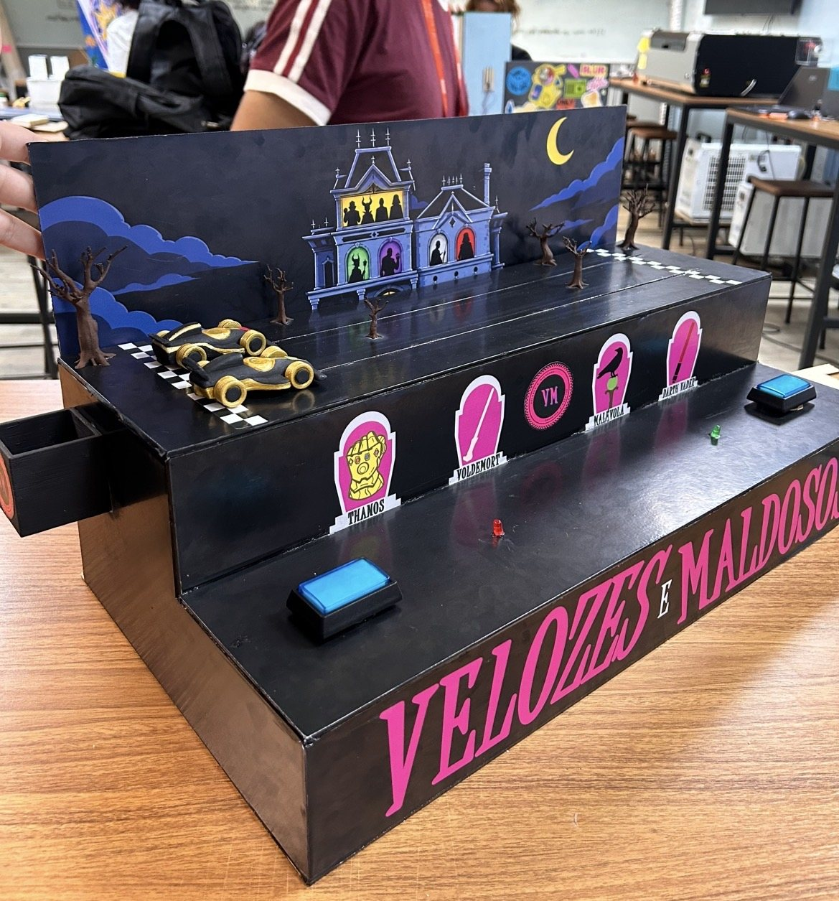
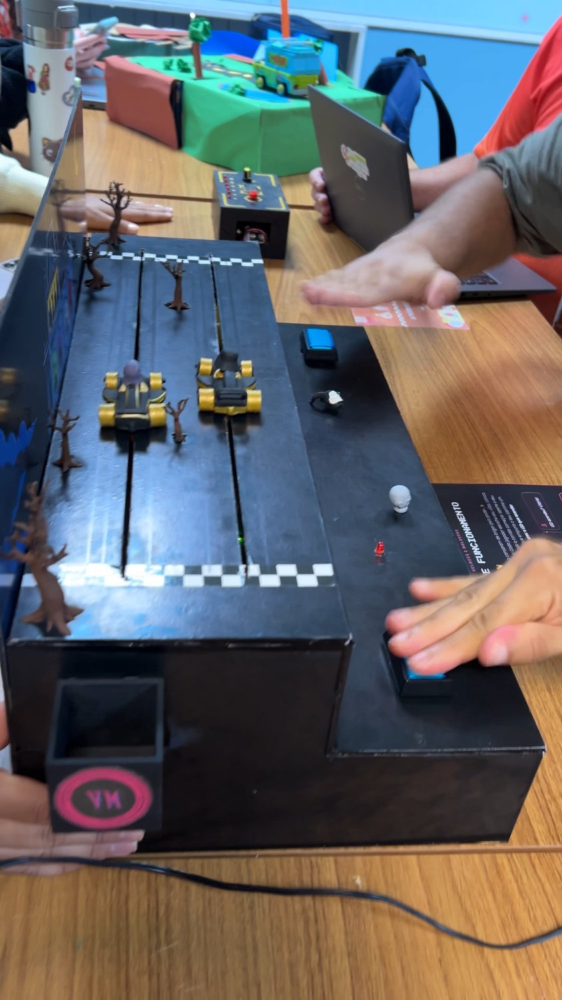
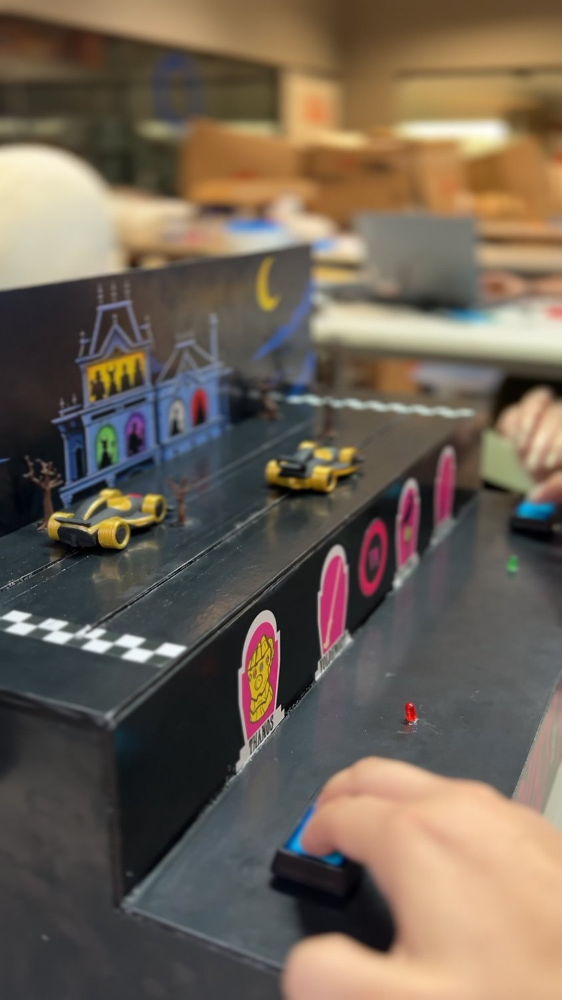
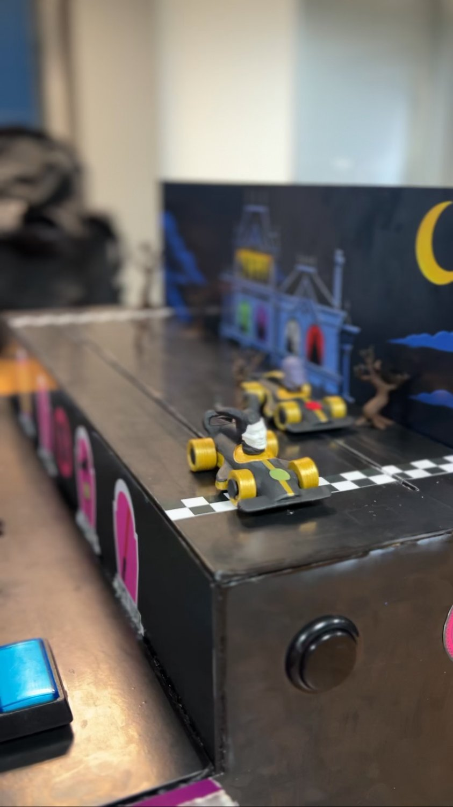
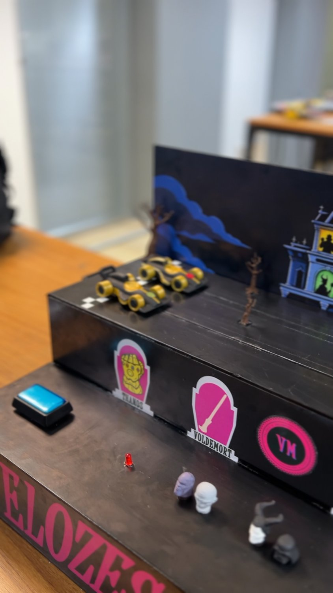
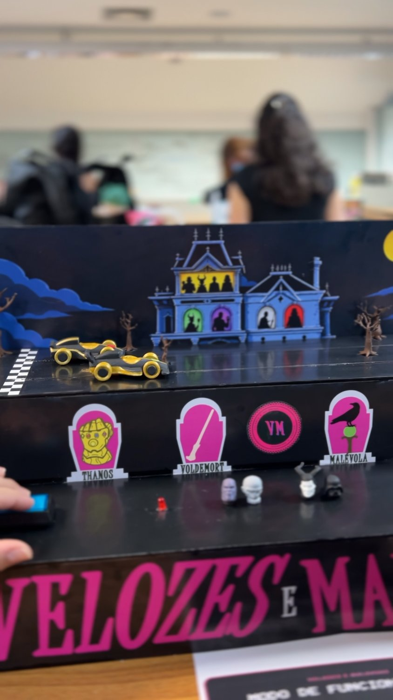
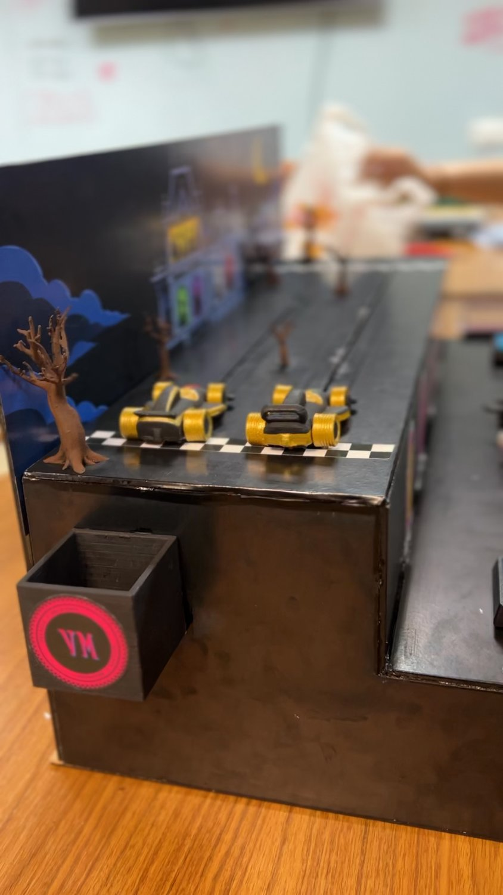
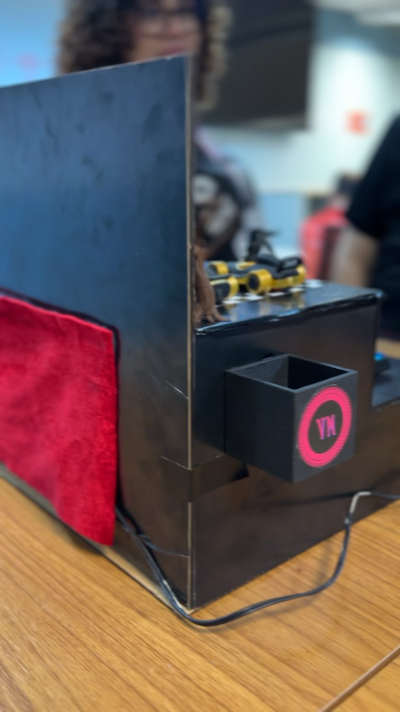

01 — De onde surgiu
A gente queria uma corrida de verdade entre duas pessoas.
O ponto de partida foi simples: queríamos fazer um jogo de corrida. Mas não uma corrida na tela — uma corrida que acontecesse na frente das pessoas, numa mesa, com alguém do seu lado tentando ganhar de você.
Aí veio a lembrança daqueles joguinhos de cavalo de parque de diversões: você joga água no alvo, ou acerta a bola, e o cavalinho anda um pouquinho. Quanto mais rápido você acerta, mais rápido ele avança. É um jogo que não depende de gráfico nenhum, depende de você e da pessoa ao lado.
Foi daí que saiu o Velozes e Maldosos: dois botões arcade, dois carrinhos, 45 centímetros de pista e um cenário de mansão mal-assombrada ao luar. A estética veio do contraste entre o preto e o rosa, e o elenco veio da ideia de colocar vilões no volante — porque numa corrida assim ninguém está sendo exatamente educado.
O que a gente quis guardar
- 01Competitividade
dois jogadores, lado a lado, no mesmo segundo. - 02Interação
o jogo só existe se tiver alguém pra disputar com você. - 03Nostalgia
botão grande, luz, som: cara de fliperama. - 04Presença física
madeira, tinta, motor. Nada de tela.
02 — Como funciona
Quem clicar mais rápido chega primeiro.
A regra inteira cabe numa frase, e é de propósito: ninguém precisa de tutorial pra começar a jogar.
Cada um no seu botão
Dois botões arcade, um em cada ponta do painel. Um jogador de cada lado.
Martela sem dó
Cada clique chega no Arduino, que manda um pulso para o motor da sua raia.
O carrinho avança
O motor puxa o carrinho pela raia. Quanto mais rápido o clique, mais contínuo o avanço.
O LED decide
Quem cruza a linha primeiro acende o seu LED. A luz é o resultado oficial da disputa.
E se travar?
Levanta a cortina vermelha da traseira: Arduino, motores e fiação ficam todos ali, à mão.
03 — Ficha técnica
O que tem por dentro.
Medidas
- Comprimento
- 55cm a caixa inteira, de ponta a ponta
- Altura total
- 29cm do tampo da mesa ao topo do painel do cenário
- Pista
- 45cm da largada à chegada, em duas raias guiadas
Componentes eletrônicos
- 1Arduinoo cérebro: lê os botões, conta os cliques e decide quem venceu
- 1Protoboardonde a fiação toda se encontra, sem precisar soldar nada
- 1Ponte H — módulo L9110recebe a ordem do Arduino e entrega força aos dois motores
- 2Motores amarelosos TT clássicos, um por raia, que puxam os carrinhos pela linha
- 3Botões de fliperamaum para cada jogador e o terceiro, na lateral direita, de restart
- 2LEDsum verde e um vermelho: a luz que aponta o vencedor
- 1Buzzerna lateral esquerda: faz a contagem de largada e a música de vitória
- 2Pilhas recarregáveisa fonte de alimentação do módulo dos motores
- —Jumpersos fios que ligam tudo isso por dentro da caixa
04 — O protótipo real
Fora do 3D, em cima da mesa.







